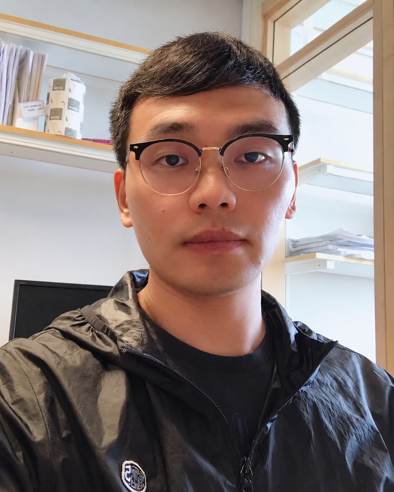

Ph.D. in Bioinformatics
China Agricultural University, Beijing, China
ACADEMIC PROFILE
Assistant Professor at Karolinska Institutet
I am Zhuang Liu, a bioinformatics researcher in the Unit of Dermatology and Venerology, Department of Medicine, Solna, at Karolinska Institutet. My research focuses on skin wound healing, RNA biology and single-cell multi-omics.

BACKGROUND
China Agricultural University, Beijing, China
Karolinska Institutet
Unit of Dermatology and Venerology
Department of Medicine, Solna
Karolinska Institutet
Unit of Dermatology and Venerology
Department of Medicine, Solna
RESEARCH
Chen, Yongjian; Liu, Zhuang
International Journal of Surgery · 112(2):5248-5251
Niu, Guanglin; Geara, Jennifer; Chen, Yongjian; Luo, Lihua; Xiao, Yanwei; Liu, Zhuang; Gaborieau, Margaux; Pan, Ling; Loh, Edmund; Li, Dongqing
Advanced Science · 13(26):e17141
Landen, Ning Xu; Luo, Lihua; Li, Dongqing; Sommar, Pehr; Niu, Guanglin; Geara, Jennifer; Friedlander, Marc; Liu, Zhuang
Zhu, Liping; Du, Lijun; Wu, Jianmin; Ding, Dongmei; Wang, Jiating; Wang, Rong; Liu, Zhuang; Kuzmina, Natalia; Wang, Hongsheng; Yang, Yong
Journal of Investigative Dermatology · 146(4):954-972. e8
Wang, Qizhang; Niu, Guanglin; Liu, Zhuang; Toma, Maria A; Geara, Jennifer; Bian, Xiaowei; Zhang, Letian; Piipponen, Minna; Li, Dongqing; Wang, Aoxue
British Journal of Dermatology · 192(3):468-480
Liu, Zhuang; Bian, Xiaowei; Luo, Lihua; Björklund, Åsa K; Li, Li; Zhang, Letian; Chen, Yongjian; Guo, Lei; Gao, Juan; Cao, Chunyan
Cell stem cell · 32(3):479-498. e8
Niu, Guanglin; Toma, Maria A; Geara, Jennifer; Bian, Xiaowei; Chen, Yongjian; Luo, Lihua; Wang, Qizhang; Xiao, Yunting; Vij, Manika; Piipponen, Minna
Advanced Science · 12(25):2416784
Wen, Qiuhan; Wang, Zhen; Bao, Qi; Ding, Tianli; Zhang, Haihan; Li, Jianbo; Liu, Zhuang; Huang, Jieping; Yi, Guoqiang
Genome Research · 35(9):2116-2129
Shang, Ming-Mei; Liu, Zhuang; Knezevic, Bogdan; Westerberg, Christine Möller; Panda, Sudeepta Kumar; Fang, Hai; Landén, Ning Xu; Sundström, Michael; Knight, Julian C; Berg, Louise
Translational Research
Wang, Jiating; Guo, Lei; Tao, Yunxi; Xiao, Yunting; Huang, Yejing; Pan, Ling; Lyu, Chen; Zhu, Liping; Zhang, Xiya; Gao, Juan
Proceedings of the National Academy of Sciences · 122(52):e2512142122
Luo, Longlong; Cheng, Huaitao; Liu, Zhuang; Olszewski, Pawel; Pasquali, Lorenzo; Xu, Ning; Enge, Martin; Pivarcsi, Andor; Sonkoly, Enikö
British Journal of Dermatology · 191(4):635-637
Li, Dongqing; Liu, Zhuang; Zhang, Letian; Bian, Xiaowei; Wu, Jianmin; Li, Li; Chen, Yongjian; Luo, Lihua; Pan, Ling; Kong, Lingzhuo
Nature communications · 15(1):8637
Bian, Xiaowei; Piipponen, Minna; Liu, Zhuang; Luo, Lihua; Geara, Jennifer; Chen, Yongjian; Sangsuwan, Traimate; Maselli, Monica; Diaz, Candice; Bain, Connor A
Nature Communications · 15(1):9286
Zhang, Letian; Piipponen, Minna; Liu, Zhuang; Li, Dongqing; Bian, Xiaowei; Niu, Guanglin; Geara, Jennifer; Toma, Maria A; Sommar, Pehr; Xu Landén, Ning
Cell Death & Differentiation · 30(5):1334-1348
Sommar, Pehr; Liu, Zhuang; Zhang, Letian; Toma, Maria A; Li, Dongqing; Bian, Xiaowei; Pastar, Irena; Tomic-Canic, Marjana; Landén, Ning Xu
Journal of plastic, reconstructive & aesthetic surgery · 87:S19
Toma, Maria A; Liu, Zhuang; Wang, Qizhang; Zhang, Letian; Li, Dongqing; Sommar, Pehr; Landen, Ning Xu
Journal of Investigative Dermatology · 142(10):2793-2804. e26
Li, Dongqing; Cheng, Shangli; Pei, YU; Sommar, Pehr; Kärner, Jaanika; Herter, Eva K; Toma, Maria A; Zhang, Letian; Pham, Kim; Cheung, Yuen Ting
Journal of Investigative Dermatology · 142(3):705-716
Liu, Zhuang; Zhang, Letian; Toma, Maria A; Li, Dongqing; Bian, Xiaowei; Pastar, Irena; Tomic-Canic, Marjana; Sommar, Pehr; Xu Landen, Ning
elife · 11:e80322
Liu, Zhuang; Sun, Congjiao; Yan, Yiyuan; Li, Guangqi; Li, Xiao Chang; Wu, Guiqin; Yang, Ning
Poultry science · 100(5):101044
Liu, Zhuang; Yang, Ning; Yan, Yiyuan; Li, Guangqi; Liu, Aiqiao; Wu, Guiqin; Sun, Congjiao
BMC genetics · 20(1):67
Liu, Zhuang; Sun, Congjiao; Yan, Yiyuan; Li, Guangqi; Shi, Fengying; Wu, Guiqin; Liu, Aiqiao; Yang, Ning
Scientific reports · 8(1):10832
Liu, Zhuang; Sun, Congjiao; Yan, Yiyuan; Li, Guangqi; Wu, Guiqin; Liu, Aiqiao; Yang, Ning
Frontiers in genetics · 9:340204
Bi, Huijuan; Liu, Zhuang; Sun, Congjiao; Li, Guangqi; Wu, Guiqin; Shi, Fengying; Liu, Aiqiao; Yang, Ning
Poultry science · 97(6):1948-1953
Liu, Zhuang; Sun, Congjiao; Qu, Liang; Wang, Kehua; Yang, Ning
PLoS One · 11(11):e0166146
Publication list based on the supplied Google Scholar export, ordered by year. Author lists and publication details are reproduced as provided in the export.